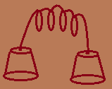
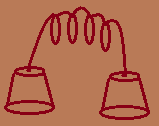

Shivam Sharma
MSc Undergrad
IIT Kharagpur
TIMELINE
30 July 1996
Born:
Shivam Sharma was born on 30th of july in 1996 in
Bharatpur district of Rajasthan. There was a flood in district at that time.
2000
School:
His father was too much concerned about his education so he gave his son most expensive schooling and sent him to
ST Peters School Bharatpur Rajasthan. A renowned english convent school.
April 2012
Kota:
After completing 10th in the school he decided to pursue his further education in engineering field. He took admission in
Vibrant Academy Kota Rajasthan. A renowned educational center for JEE Preaparation.
June 2014
JEE:
He qualified
JEE in 2014 and opted for Maths and Computing department in
IIT Kharagpur. He got 2191 rank in JEE Advance and allowed to take seat in IITs.
July 2014
IIT Kharagpur:
He joined IIT Kharagpur on 18 July 2015. He got Lal Bahadur Shastri hall of residence for first year. He became wing represantative of his wing. He did not join any society there until he came to know about
Khitij.
April 2015
Khitij:
He went to one of the interview for Khitij web-team selections. He was selected for summer training. At first he thought he may not be able to work for such a big society, but he did not want to leave it also. So finally he decided to work for it.
May 2015
Today:
Currently he is working for khitij summer training. He will also be trying hands in photoshop in coming weeks.

 
